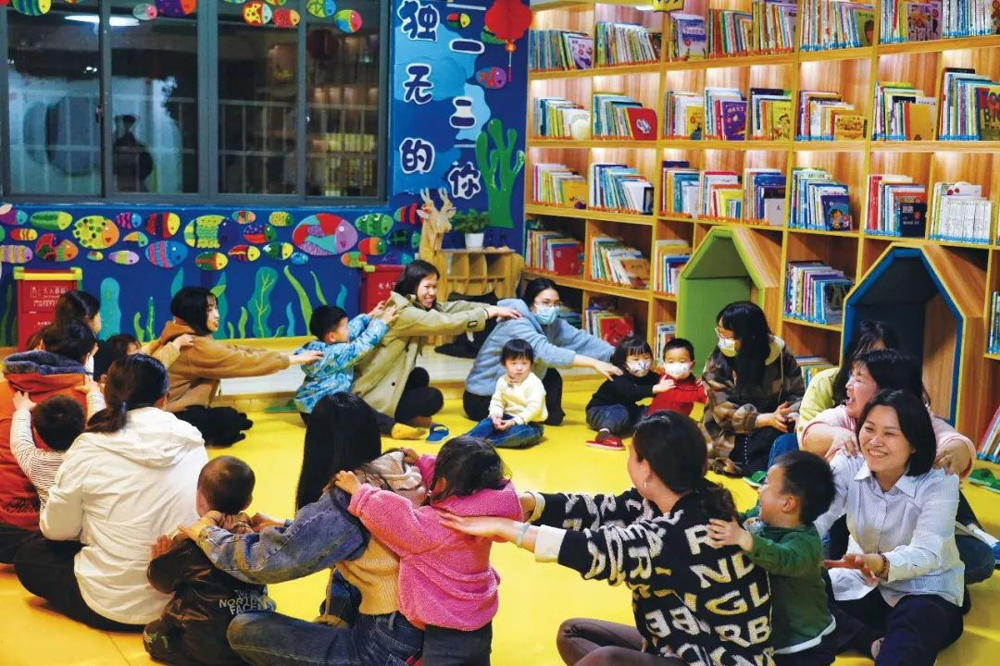

破局之道
政策探索与未来方向：让生育不再成为沉重负担
17%
天门市出生率同比增长
4.5个
2025年每千人口托位数目标
66万
新增普惠性托位
7.86%
3岁以下婴幼儿入托率
国内政策探索：初见成效
🎯 地方政策创新实践
国内各地已开始尝试通过政策降低生育成本，部分地区取得了积极成效：
先行先试案例：
🏔️ 四川攀枝花
- 2021年率先实施
- 二孩及以上家庭
- 每月每孩500元育儿补贴
- 开创性政策探索
🏛️ 湖北天门
- 二孩家庭：9.36万元补助
- 三孩家庭：16.51万元补助
- 包括生育奖励、购房奖补等
- 出生率同比增长17%
政策效果：天门市政策实施后，当地出生率同比增长17%，证明了经济支持政策的有效性。
托育服务：解决"没人带孩子"难题
🏫 国家托育服务发展规划
在托育服务方面，国家正在加快推进普惠性托育服务体系建设：
📊 发展目标
- 2025年每千人口3岁以下婴幼儿托位数达4.5个
- 新增普惠性托位66万个
- 覆盖城乡的托育服务网络
🏙️ 地方实践
- 成都、北京等地推进托育机构建设
- 社区托育服务点建设
- 企业托育服务探索
现状挑战：目前3岁以下婴幼儿入托率仅7.86%，与需求相比仍有巨大缺口。

政策落地的现实挑战
💰 补贴覆盖不均
问题：育儿补贴多向二孩、三孩倾斜，一孩家庭补贴较少。
现状：全国最高为深圳，一孩家庭仅7500元补贴。
影响：无法有效激励首次生育意愿。
🏢 企业成本分担不明
问题："政府请客、企业埋单"现象普遍。
风险：可能加剧女性就业歧视。
需求：建立明确的成本分担机制。
🏫 托育服务供给不足
缺口：普惠托育机构数量严重不足。
现状：入托率仅7.86%，远低于需求。
制约：无法满足双职工家庭需求。
系统性解决方案
🎯 多方发力
要真正降低生育成本，需要多方发力，构建系统性解决方案：
1️⃣ 扩大补贴覆盖
- 兼顾一孩与多孩家庭
- 提高补贴标准和覆盖面
- 建立动态调整机制
2️⃣ 建立共担机制
- 政府、企业、个人共担
- 通过税收减免减轻企业压力
- 完善生育保险制度
3️⃣ 强化服务供给
- 大力发展托育服务
- 优化教育资源配置
- 降低养育隐性成本
4️⃣ 推动父亲参与
- 落实陪产假和育儿假
- 提高男性育儿参与度
- 减少女性职业损失
建议延长带薪父亲陪产假
🌟 成功案例：深圳模式
深圳作为经济特区，在生育支持政策方面进行了积极探索：
深圳政策亮点：
- 经济支持：一孩家庭7500元补贴，全国最高
- 托育服务：大力推进社区托育点建设
- 企业支持：鼓励企业建设母婴室和托育设施
- 住房优惠：多孩家庭在住房申请中给予优先
未来展望
🔮 让摇篮曲不再破碎
"只有让生育不再成为家庭尤其是女性的沉重负担，生育率才能真正迎来回升的动力。降低生育成本，让养孩子成为一件幸福且愉快的事，让摇篮曲不再破碎，道路还很长。"
实现路径：
- 短期目标：缓解当前生育成本压力，提高生育意愿
- 中期目标：建立完善的生育支持体系，实现可持续发展
- 长期目标：形成生育友好的社会环境，让生育成为幸福选择